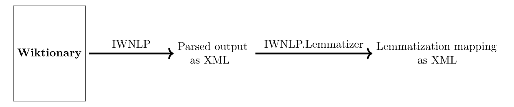

IWNLP: Inverse Wiktionary for Natural Language Processing
News:
- 2016.10.20: We added new results for the 20161020 dump.
- 2015.12.11: We added a results page.
- 2015.12.11: We adjusted IWNLP to the Wiktionary syntactic changes in September 2015. We also fixed some bugs in our evaluation (for more details, see results). A new version is available for download.
- 2015.07.14: Our parsed output and lemmatization mapping are now available for download.
- 2015.07.06: We pushed the code for IWNLP and IWNLP.Lemmatizer to their Github repositories.
- 2015.06.26: Setting up the Github project page
What is IWNLP?:
IWNLP is a dictionary-based lemmatizer for the German language. It is based on the German edition of Wiktionary. IWNLP consists of two parts:
ACL 2015 paper
This picture demonstrates the workflow of IWNLP:

Download:
FAQ:
-
What software is required to run IWNLP?
The output of our parser and our lemmatization mapping are XML files and will be available as download, so you don't have to touch our code to use IWNLP. Simply parse our XML file and you are ready to go.
The code for the parser and the lemmatizer is written in C# / .NET Framework 4.5. You can download the code from Github and parse the latest Wiktionary dump (unzip first) yourself.
-
How can I produce a lemmatization mapping of the latest XML dump?
- Download the latest Wiktionary dump and unzip it.
- Run IWNLP.Parser on the dump. The parses produces an XML output file.
- Run IWNLP.Lemmatizer on the XML output from the parser and save the results to another XML file which contains the lemmatization mapping.
-
How is IWNLP licensed?
IWNLP reimplements Wiktionary templates and uses Wiktionary articles for unit tests. Because these templates and articles, as part of Wiktionary, are licensed under
Creative Commons BY-SA 3.0, we must also share our software under the same license. IWNLP is licensed under Creative Commons BY-SA 3.0.
-
How can I cite IWNLP?
BibTex
-
How can I contribute?
-
I think I've found an error in IWNLP. What can I do?
Open an issue on Github, explaining what error you have encountered and which result you would have expected instead. Please link the corresponding wiktionary article and the output produced by the parser. If you are able to add a unit test, feel free to submit a pull request.
-
How is the code of IWNLP structured?
IWNLP consits of two solutions which contain several projects:
- IWNLP
- IWNLP.Models: Class library for POCOs
- IWNLP.Parser: Main project for parsing a Wiktionary dump
- IWNLP.ParserTest: Project that contains unit tests for components of IWNLP.Parser
- IWNLP.Lemmatizer
- IWNLP.Lemmatizer: Reads the parsed XML output from IWNLP.Parser, generates a mapping for lemmatization and saves it as XML file.
- IWNLP.Lemmatizer.Converter: Reads CoNLL2009 files and converts them into classes from IWNLP.Lemmatizer.Models
Example format
- IWNLP.Lemmatizer.Predictor: Reads the files from converted corpora and uses IWNLP and external NLP Tools, such as TreeTagger, Mate Tools and Morphy to predict lemmas. Due to license issues, we do not redistribute their code or their models. As a result, you won't be able to compile this project. Nevertheless, it shows you how we accessed the 3rd party components as a black box.
The predictor produces output files in this format.
- IWNLP.Lemmatizer.Evaluation: Project that reads the output XML files from IWNLP.Lemmatizer.Predictor and compares the results with gold lemmas.
Example format with predicted lemmas
- IWNLP.Lemmatizer.Models: Class library containing POCOs for IWNLP.Lemmatizer.Converter, IWNLP.Lemmatizer.Predictor and IWNLP.Lemmatizer.Evaluation